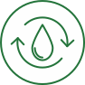

Очищение организма
-
Капельница «Детокс»

-
Активирует процессы детоксикации в печени, работу иммунной системы, желудочно-кишечного тракта и легких.
Укрепляет защитные силы организма и способствует быстрому обезвреживанию и выведению вирусов и бактерий,
пищевых и лекарственных токсинов. Усиливает антиоксидантную систему, увеличивая устойчивость к развитию
заболеваний.
-
Капельница «Перезагрузка»
- Оказывает противовоспалительное действие и снижает чувствительность
организма к аллергенам. Способствует связыванию и выведению большинства токсичных соединений и тяжелых
металлов, выводя их наружу естественным путем и очищая кровь и лимфу. Гармонично дополняет программы
детоксикации легким слабительным и антипаразитарным эффектами.
-
Лимфодренажный массаж
- Специальная методика мануального или аппаратного воздействия на тело,
позволяющая оказать влияние на движение лимфы в организме. Помимо косметического эффекта, лимфодренажный
массаж оказывает оздоровительное действие на организм: выведение токсинов, улучшение кровообращения,
укрепление иммунитета.
-
Спектральная фототерапия (СФТ) на проекцию органов
-
Данный метод доставки необходимых микроэлементов к пораженному органу с помощью мультиспектральной
энергии света cочетает принципы фототерапии и рефлексотерапии. Лечебный эффект достигается за счет
насыщения организма определенными микро- и макроэлементами, которые участвуют во всех обменных
процессах, обеспечивая нормальное функционирование организма.
-
Консультации врачей-специалистов
- Гастроэнтеролог, диетолог.
-
Анализ крови на содержание тяжелых металлов
-
Панель антиоксидантной активности MOS-14
-
Генетический тест «Детоксикация и метаболизм»
- Избыточные гормоны, токсины и лекарственные препараты выводятся с
помощью одних и тех же систем детоксикации. Именно она защищает нас от факторов окружающей среды и
поддерживает баланс веществ в организме. Благодаря данному генетическому исследованию можно
оптимизировать свой образ жизни, определяя, какие виды продуктов и лекарственных препаратов подходят
именно Вам, и при использовании каких химических соединений и препаратов стоит проявлять особую
осторожность, чтобы избежать негативных последствий.
-
Программа «Детокс»
-
Это комплекс лечебно-профилактических мероприятий, направленных на избавление от токсинов. Запускает
природные механизмы самооздоровления и очищения. Также включает в себя диагностику.